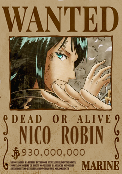

Selecione um personagem
- 
Monkey D. Luffy
Ele come demais e adora festas. Ele se diverte por ter essa personalidade livre, mas age com suas próprias crenças sem se vincular ao bom senso, e confia muito em seus Companheiros!
Ele come demais e adora festas. Ele se diverte por ter essa personalidade livre, mas age com suas próprias crenças sem se vincular ao bom senso, e confia muito em seus Companheiros!